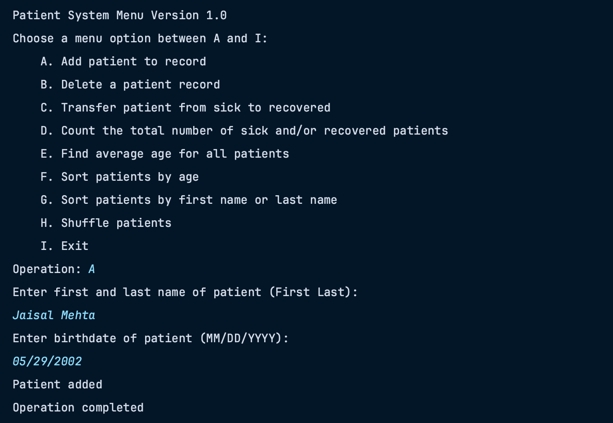
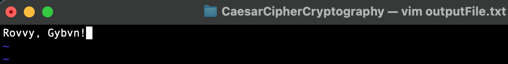

Patient System Application (extended version of Patient System using Java GUI)
Click here for project updatesCurrent Project(s)
Recent Projects
Stock Price Prediction With Machine Learning
In today's financial landscape, Machine Learning is increasingly utilized to predict stock performance, aiding investors in making informed decisions. The objective is to develop a predictive model by collecting and preprocessing diverse data, selecting key features, and training ML algorithms. Evaluation involves rigorous testing for accuracy and generalization, with fine-tuning to optimize model parameters. Once deployed for real-time predictions, continuous monitoring and periodic retraining ensure its effectiveness over time. ML empowers investors with insights, yet it's essential to acknowledge the inherent uncertainty of the stock market and employ diverse investment strategies alongside ML predictions for informed decision-making. Project made with Jupyter Notebook/Lab and Python, utilizing various statistical and machine learning libraries. Dataset downloaded from Yahoo Finance.
.png)
Asteroids game made with C# and Unity. Unity version 2022.3.19f1 and C# version 9.0.
The Java Patient System is a console-based application built to efficiently manage patient records, leveraging text file input/output for persistent data storage. This system offers a comprehensive set of functionalities, allowing users to add patients with their first name, last name, and date of birth, remove patients, and update their health status between "sick" and "recovered." Real-time statistics, including the number of sick, recovered, and total patients, are available, alongside the computation and display of the average age of all patients. Users can sort patients by age, first name, or last name, and introduce randomness by shuffling the patient order. The program promotes data integrity through file persistence, ensuring that patient data remains intact across program executions.

This project is an implementation of the Caesar cipher encryption and decryption algorithm in the C programming language. The Caesar cipher is a simple substitution cipher where each letter in the plaintext is shifted a certain number of positions down the alphabet. This project provides a command-line interface for encrypting and decrypting messages using the Caesar cipher.



To shortly describe the application for the final project for iOS App Development, my partner and I essentially wanted to create an animal scrapbook app. The basis of this app will implement an apple developer provided createML model which will use the dataset to essentially classify an animal somebody takes a picture of in our app. The animal will then be recorded in an archive, also including how many times that certain animal has been captured. The app implements UIIMagePicker to classify whatever animal you take a picture of. The app will also implement notifications to remind the user to get on the app and do their daily animal finding. The goal of this app is to have the user collect animals and learn about ones they don't know about in a digital way.
.png)
.png)
.png)
.png)
.png)
My very first major Java program, created with IntelliJ Idea using Java 16, which I created for a Computer Science course, Intro to Software Systems, as a weekly assingment. Current Java project uses major programming concepts such as data types, object oriented programming design/classes, iteration/loops, arraylists, and graphical user interface. Objectives of the program are to implement JFrames, JPanels, JComponents, JButtons, JLabels, and JTextfield, ActionListeners, to create a pop-up window and implements a poll of Operating Systems and asks the user to select various options using buttons or type in their own option using a textfield(s) which is then collected in an arraylist and has an option to show a stacked bar graph, using graphical user interfaces, given the data from the arraylist of data for each category.